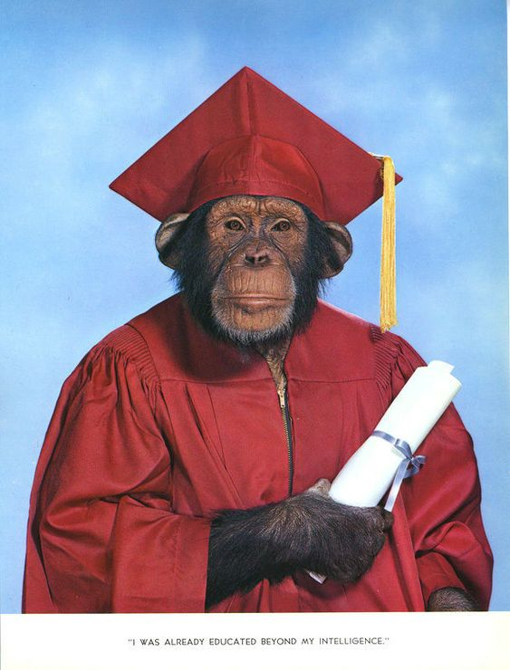

FOUNDER We Woof Meowing Company
Bastian Grande adalah founder juga CEO dari We Woof Meowing Company. Meskipun beliau adalah seekor monyet, beliau sangat berdedikasi untuk menciptakan perusahaan ini. Sebagai seekor yang bebas hidup di luar sana, ia bertekad untuk membuat perusahaan untuk anjing dan kucing karena mereka sudah tidak bebas, setidaknya mereka bisa memaksimalkan kehidupan di dunia dengan menjadi seekor yang bermanfaat.